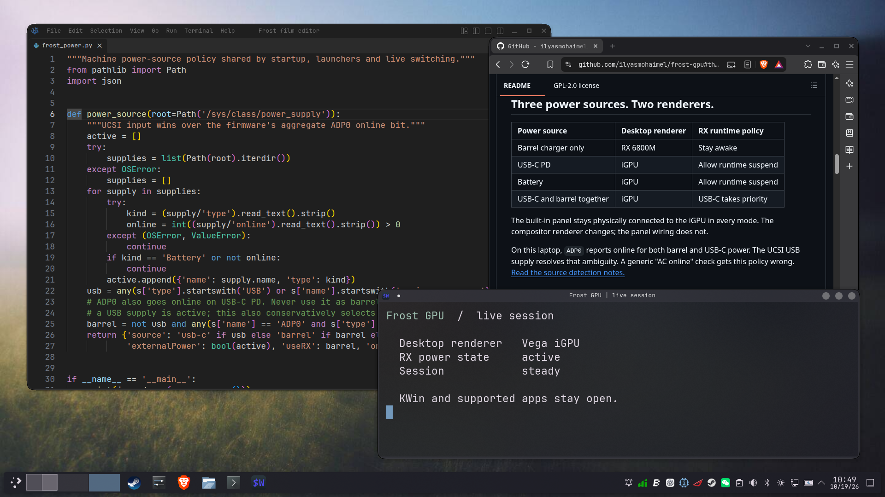
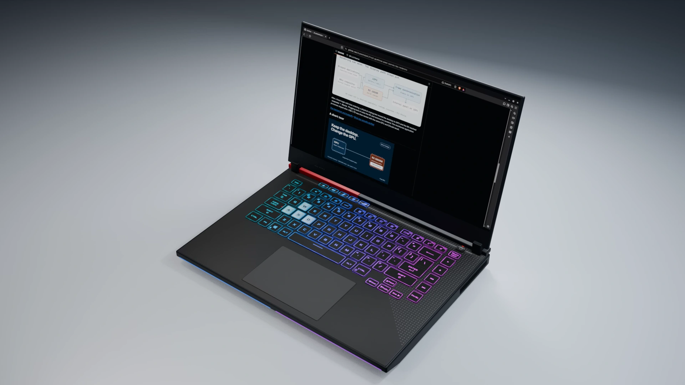

Frost GPU
Unplug.Keep going.
A different GPU.Your desktop, still here.
Keep yourdesktop.
KDE stays open.
Same windows. Different GPU.

RX 6800MVega iGPU
Real KWin renderer switch. Triggered manually for this capture.
Two GPUs. One session.
Ryzen + VegaIntegrated graphics
RX 6800MDiscrete graphics
Renderer handoff
Illustrated cutaway. Openings in the heat spreader expose the chips.
Power decides.
Battery or USB-C PD
Vega iGPUBarrel charger
RX 6800MExperimental AMD / AMD session. Live migration requires supported apps.

Frost GPU
Your desktop stays with you.
github.com/ilyasmohaimel/frost-gpu
Source, patches and a porting guide.
Music: “Machina” by Scott Buckley · CC BY 4.0